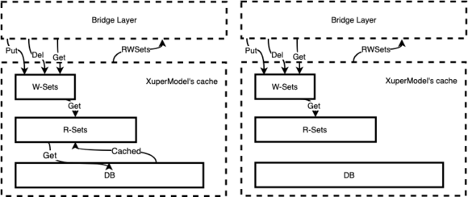

1. XuperModel¶
XuperChain能够支持合约链内并行的很大的原因是由于其底层自研的XuperModel数据模型。
XuperModel是一个带版本的存储模型，支持读写集生成。该模型是比特币utxo模型的一个演变。在比特币的utxo模型中，每个交易都需要在输入字段中引用早期交易的输出，以证明资金来源。同样，在XuperModel中，每个事务读取的数据需要引用上一个事务写入的数据。在XuperModel中，事务的输入表示在执行智能合约期间读取的数据源，即事务的输出来源。事务的输出表示事务写入状态数据库的数据，这些数据在未来事务执行智能合约时将被引用，如下图所示：

XuperModel事务
为了在运行时获取合约的读写集，在预执行每个合约时XuperModel为其提供智能缓存。该缓存对状态数据库是只读的，它可以为合约的预执行生成读写集和结果。验证合约时，验证节点根据事务内容初始化缓存实例。节点将再次执行一次合约，但此时合约只能从读集读取数据。同样，写入数据也会在写入集中生效。当验证完生成的写集和事务携带的写集一致时合约验证通过，将事务写入账本，cache的原理如下所示，图中左边部分是合约预执行时的示意图，右边部分是合约验证时的示意图：

XuperModel合约验证